TECHVESTVENTURES RISK ALERTS — Daily Mode — Emergent News Digest — November 7, 2026, 9:00 AM EST see all graphs click TVV Risk Center
TVV RESEARCH DIGEST — November 7, 2026 — 12 desks
1. Major Geopolitical Conflict Developments
- ★ US strikes hit Iran's Qeshm Island again Friday night after more ships were attacked in the Strait of Hormuz; Trump called them "minor strikes." Iran's army claims it downed a US MQ-9 drone with a new system (Iranian claim, unconfirmed). Iran's navy says a tanker running with its transponder off hit a mine and caught fire in the eastern strait; Washington says the mines have been cleared (conflicting claims). Al Jazeera · Iran International
- ★ UKMTO's weekly count: 11 commercial ships attacked in and around Hormuz in the week to Nov 4, three of them sunk; 325 transits, about 65% below pre-conflict levels. UKMTO cautions that most attacks go unreported. Middle East Eye · Al Jazeera
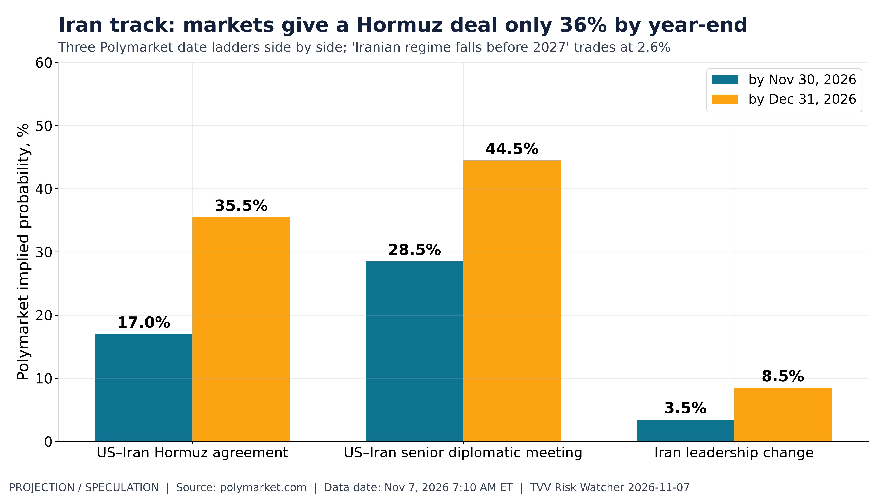
Iran track: markets give a Hormuz deal only 36% by year-end. Polymarket: US–Iran Hormuz agreement 17% by Nov 30 / 36% by Dec 31; senior US–Iran meeting 28% / 44%; Iran leadership change 3.5% / 8.5%; regime falls before 2027 2.6%. Polymarket, Nov 7, 2026 7:10 AM ET. [Projection/Speculation; data as of Nov 7, 2026 7:10 AM ET] Source: polymarket.com data page
- ★ Qatar's mediation plan: Doha is pressing Tehran to let UN inspectors visit its bombed nuclear sites, with the highly enriched uranium stockpile possibly down-blended rather than removed, as part of a path to reopening Hormuz (Guardian report; not confirmed by either side). Iran's Araghchi says he spoke with 12 foreign ministers in 48 hours. Polymarket prices a US–Iran Hormuz agreement at 17% by Nov 30 and about 36% by Dec 31 (see graph): markets still see no quick reopening. The Guardian · Polymarket
- ★ Russia hit Kyiv overnight with 36 ballistic missiles and 172 drones, damaging energy facilities, homes, a kindergarten and the Northern Bridge, three days before US–Russia–Ukraine talks in Abu Dhabi on Tuesday Nov 10. Ukraine says 2 people were killed and 37 injured nationwide over the past day. Polymarket's Russia–Ukraine ceasefire-by-Dec 31 contract has moved only from about 9.5% to 10.5% in a month (see graph). Kyiv Independent · AP · Polymarket
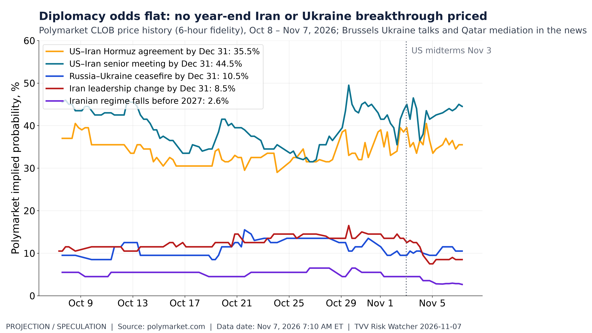
Diplomacy odds flat: no year-end Iran or Ukraine breakthrough priced. Polymarket 6-hour price history since Oct 8: Russia–Ukraine ceasefire by Dec 31 9.5% → 10.5%; Hormuz agreement 37% → 35.5%. Polymarket CLOB, Nov 7, 2026 7:10 AM ET. [Projection/Speculation; data as of Nov 7, 2026 7:10 AM ET] Source: polymarket.com data page
2. Major Terror / Security Incidents
- ★ Jordan: a security officer was stabbed to death and another wounded near the Sri Lankan Embassy in Amman in what authorities call a planned terrorist attack; the attacker was arrested. Qatar and Kuwait condemned it. Anadolu
- ★ Health-sector cold-chain warning: Health-ISAC alerted hospitals after attackers raised defrost and temperature thresholds on a French blood bank's cold-storage controllers; the French Blood Establishment caught it in time. Pro-Russian groups NoName057(16) and Z-Pentest claim refrigeration attacks across Europe; experts doubt the claims, and Iran is under scrutiny for incidents at US military bases. NPR
- ★ Rosstat breach: Russia's state statistics agency admits its servers were hit over Oct 29–Nov 1. Hacker groups Belarusian Cyber Partisans and Silent Crow claim 23 TB stolen and posted Russian military casualty figures of 1,584,910 on a Rosstat site (hacker claim; figures not independently verified). TechRadar
- ★ Ransomware and data theft this week: Queens Public Library's services are down at all 66 branches after a ransomware attack (no gang has claimed it); Norway's aid agency Norad says criminals stole data on every grant-portal user (more than 20,000 people at 12,511 organizations); Cathay Pacific, Korean Air, Singapore Airlines and others report customer data exposed via the Amadeus breach. CISA's catalog shows 6 exploited bugs hitting federal patch deadlines by Nov 20 (see graph). CISO Series · TxCyber · CISA KEV
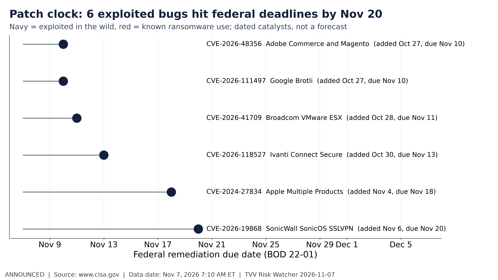
Patch clock: 6 exploited bugs hit federal deadlines by Nov 20. CISA KEV dueDate (BOD 22-01) between Nov 7 and Dec 5, 2026: 6 entries, 0 ransomware-linked. Top vendors: Adobe 1, Google 1, Broadcom 1, Ivanti 1. CISA, Nov 7, 2026 7:10 AM ET. [Announced; data as of Nov 7, 2026 7:10 AM ET] Source: cisa.gov data page
3. Earthquakes and Eruptions
- ★ No M6.0+ earthquake with significant casualties or damage since the last issue. An M6.1 off Japan's Kanto coast on Nov 6 (USGS green alert) and an M5.7 off Honshu on Nov 7 caused no reported damage. Polymarket gives about 81% odds of no M6.5+ quake worldwide in the week to Nov 8 (see graph). The Hindu / AFP · EMSC · Polymarket
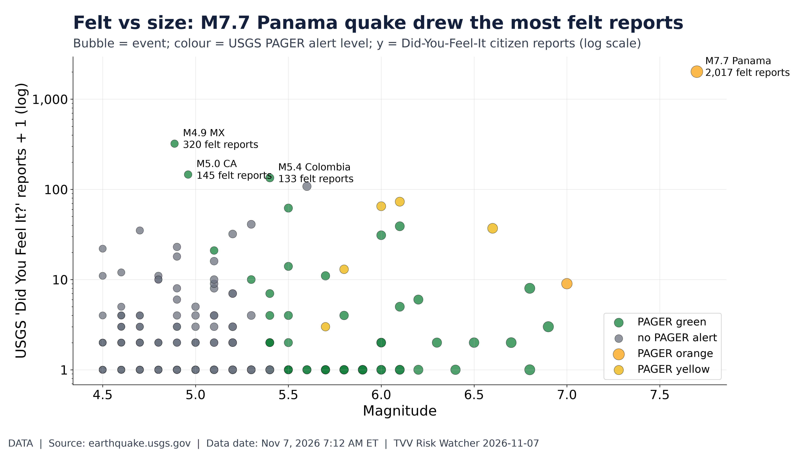
Felt vs size: M7.7 Panama quake drew the most felt reports. USGS M4.5+ past 30 days: 717 events, 119 with any DYFI felt reports; most-felt M7.7 10 km WSW of Pitaloza Arriba, Panama (2,017 reports). PAGER alerts: 74. USGS, Nov 7, 2026 7:10 AM ET. [Data; data as of Nov 7, 2026 7:10 AM ET] Source: earthquake.usgs.gov data page
4. Solar / Space Weather
- ★ NOAA SWPC's G1 (minor) geomagnetic storm watch for Nov 6–8 comes from a coronal-hole high-speed stream, not a CME. GOES high-energy electrons, a satellite-charging risk, peaked at 4,864 pfu on Nov 1 against a 1,000 pfu alert level (see graph). SWPC's 27-day outlook marks Nov 17–18 and Nov 27–28 for Kp 5 (forecast, not observation). NOAA SWPC · NOAA SWPC · NOAA SWPC
- ★ Long-horizon watch (Chicken Little Principle): magnetic pole drift and geomagnetic excursion risk stay on the board as warnings grounded in measured data; no one can predict the timing of a sudden shift. Michael Hentschel's own view: 2035 at the earliest, with critical earth changes along the way. The pole-drift globe chart returns in Sunday's issue. NOAA SWPC
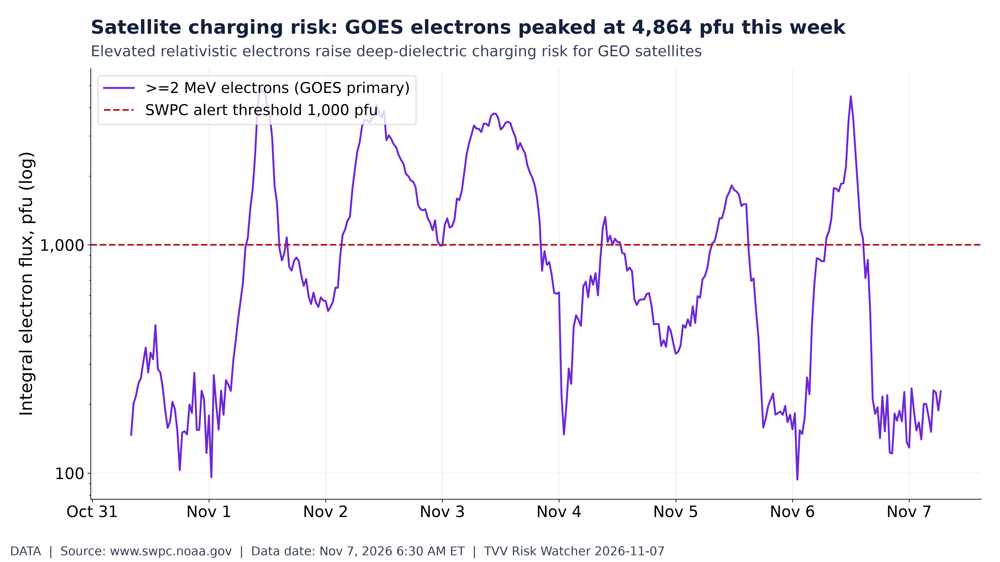
Satellite charging risk: GOES electrons peaked at 4,864 pfu this week. GOES >=2 MeV integral electron flux, 30-min medians: 7-day max 4,864 pfu (Nov 1 10 AM ET); latest 228 pfu vs 1,000 pfu alert. NOAA SWPC, Nov 7, 2026 7:10 AM ET. [Data; data as of Nov 7, 2026 6:30 AM ET] Source: swpc.noaa.gov data page
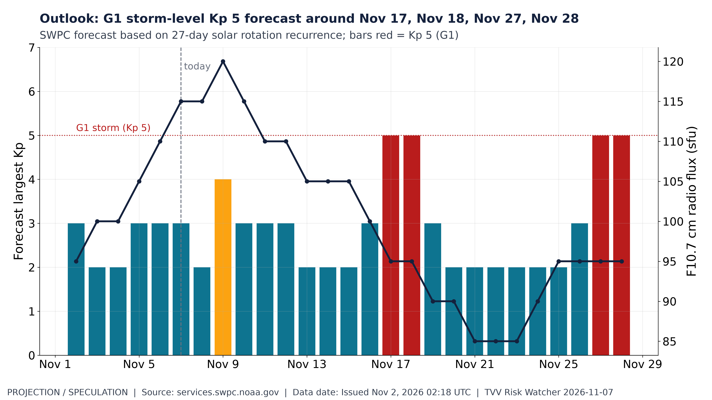
Outlook: G1 storm-level Kp 5 forecast around Nov 17, Nov 18, Nov 27, Nov 28. NOAA SWPC 27-day outlook issued Nov 2, 2026: largest Kp 5 on Nov 17, Nov 18, Nov 27, Nov 28; F10.7 peaks 120 sfu. Forecast, not observation. Nov 7, 2026 7:10 AM ET. [Projection/Speculation; data as of Issued Nov 2, 2026 02:18 UTC] Source: services.swpc.noaa.gov data page
5. Critical Infrastructure / Transportation Disruptions
- ★ Ukraine's grid: the overnight strike hit a Kyiv Oblast substation linking the Rivne and Khmelnytskyi nuclear plants to Kyiv and central Ukraine, plus substations in five other regions; Kyiv's mayor calls power supply "extremely difficult," with heat and water disrupted as winter approaches. Kyiv Independent · RFE/RL
- ★ Record flash flood on the Georgia–Tennessee line: up to 11 inches of rain in under six hours sent the Ocoee River to a record 18.05 ft at Copperhill (above the 1990 record); dozens were rescued around McCaysville and homes and businesses were badly damaged. AP · Local 3 News
- ★ Data-center build-out keeps diverging from the rest of construction: Census puts September data-center construction at $96.5B annual rate, +90% y/y, while total private construction is down 3.8% (preliminary; see graph). Census
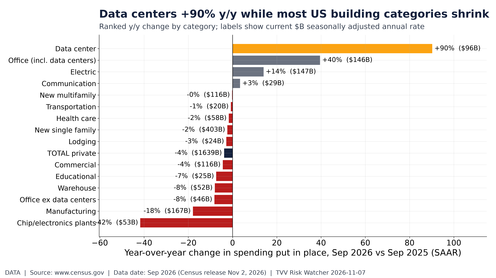
Data centers +90% y/y while most US building categories shrink. Census Value of Private Construction Put in Place, September 2026 (preliminary): data centers $96.5B SAAR, +90% y/y; total private -3.8%. Census, released Nov 2, 2026. [Data; data as of Sep 2026 (Census release Nov 2, 2026)] Source: census.gov data page
6. Econo-Metrics
- ★ October payrolls rose 165,000, above every forecast in Bloomberg's survey, with August and September revised up a combined 84,000; unemployment fell to 4.1% and hourly pay rose 0.4% on the month (3.1% y/y). Traders raised odds of a December Fed hike to about 77–78% (CME FedWatch, LSEG). BLS · TheStreet · Reuters
- ★ Preliminary November University of Michigan sentiment rose to 51.0, a three-month high, with year-ahead inflation expectations at 4.3%, but the survey closed Nov 2, before the election and Thursday's selloff. The 10-year Treasury ended the week at 4.86%, down 7–8 bp (see graph). Polymarket now prices 'overheating' at 81% for the US economy's end-2026 state, versus 19% soft landing (see graph): near-term, markets lean toward hikes, not cuts. TheStreet · Polymarket
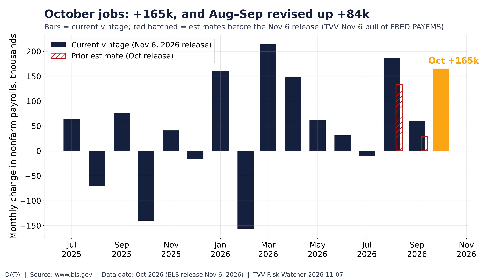
October jobs: +165k, and Aug–Sep revised up +84k. BLS Employment Situation (Nov 6, 2026): Oct nonfarm payrolls +165k; Sep revised +29k → +60k, Aug +133k → +186k; unemployment 4.1% (Sep 4.2%). FRED PAYEMS vintages Nov 6 vs prior. [Data; data as of Oct 2026 (BLS release Nov 6, 2026)] Source: bls.gov data page
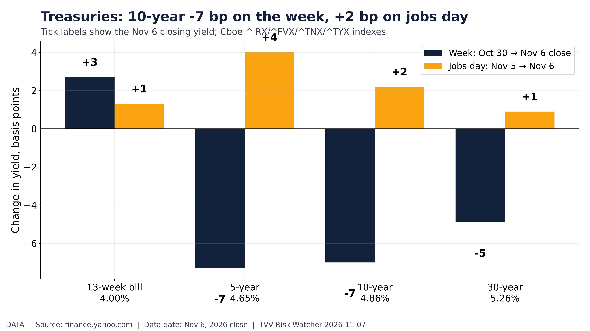
Treasuries: 10-year -7 bp on the week, +2 bp on jobs day. Cboe Treasury yield indexes (Yahoo): 10-year 4.86% (-7 bp week, +2 bp Nov 6); 30-year 5.26%; 13-week 4.00%. Yahoo, Nov 6, 2026 close. [Data; data as of Nov 6, 2026 close] Source: finance.yahoo.com data page
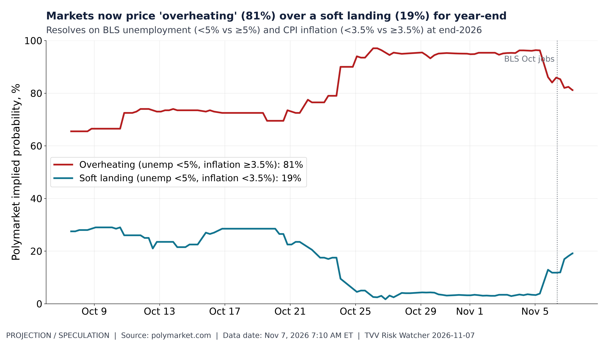
Markets now price 'overheating' (81%) over a soft landing (19%) for year-end. Polymarket 'US economic state at the end of 2026': Overheating 81% (from 66% Oct 8), Soft landing 19%; stagflation and slack ≤0.2%. Polymarket CLOB, Nov 7, 2026 7:10 AM ET. [Projection/Speculation; data as of Nov 7, 2026 7:10 AM ET] Source: polymarket.com data page
7. Epidemic / Bio-Metrics
- ★ Early US flu season: CDC FluView puts influenza positivity at 9.1% in the week ending Oct 31 (7.7% the prior week), 97.7% of subtyped flu A being H1N1. CDC notes an early start does not necessarily mean a higher peak (see graph). China CDC reports flu positivity rising to 15.6% in its outpatient sentinel samples for Oct 26–Nov 1. CDC FluView · China CDC
- ★ COVID watch, SV.2.4: China CDC's week-44 data show SARS-CoV-2 positivity of 1.3% among outpatient flu-like cases (down 0.5 points) and 1.4% among severe inpatient cases (flat), with no unknown pathogen found, so official data do not show a China COVID surge. Taiwan CDC said in October that SV.2.4 (an NB.1.8.1 descendant) made up nearly 20% of recent community COVID samples but shows no evidence of higher severity. China CDC · Taiwan CDC via CTi News
- ★ Bundibugyo Ebola: WHO's latest outbreak notice covers DRC, Kenya (nine cases, two deaths) and Nigeria (one imported case), and advises no travel or trade restrictions. WHO is backing trials of two Bundibugyo-specific vaccine candidates, ChAdOx1 BDBV and mRNA-1469. WHO · Vital Signs
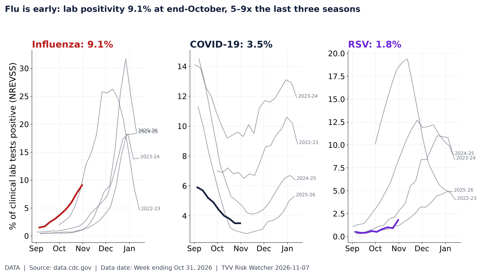
Flu is early: lab positivity 9.1% at end-October, 5–9x the last three seasons. CDC NREVSS week ending Oct 31, 2026: influenza 9.1% positive (same week 2023: 1.8%, 2024: 1.0%, 2025: 0.8%); COVID-19 3.5%; RSV 1.8%. CDC, updated Nov 6, 2026. [Data; data as of Week ending Oct 31, 2026] Source: data.cdc.gov data page
8. Gold and Silver and Commodities
- ★ Precious metals were the exception in an election-week commodity selloff: gold rose about 4.5–5% to roughly $4,050–4,075 and silver about 5.5% to $51.80, while WTI fell about 12–13% to near $90.6–90.8 and Brent to about $98 (front-month roll and settlement differences explain the spread between sources; see graph). Saxo · BullionVault
- ★ Oil futures curve: WTI for December 2027 delivery trades about $15 below the front month and Dec-28 near $70, a steep backwardation (see graph). Near-term implication: traders expect today's war premium to fade, not a lasting shortage; that is a market-implied path, not a forecast. CME Group
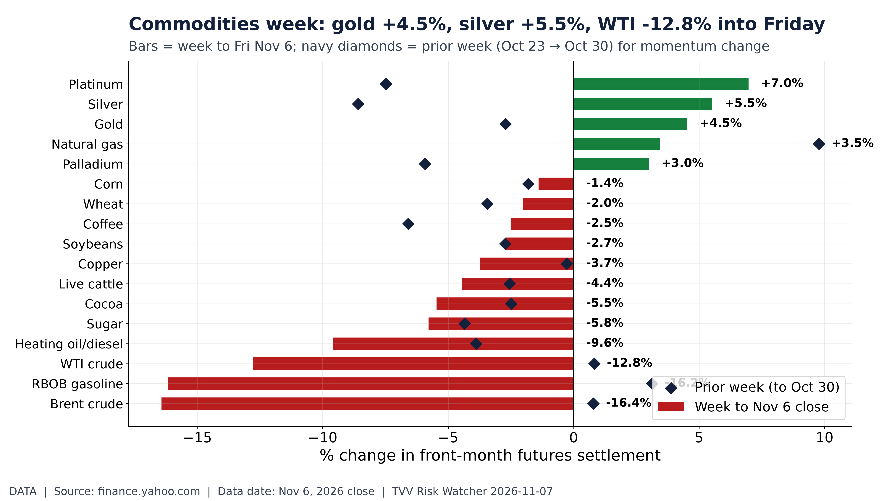
Commodities week: gold +4.5%, silver +5.5%, WTI -12.8% into Friday. Front-month futures, Oct 30 → Nov 6, 2026 close: gold +4.5% ($4,075), silver +5.5% ($51.80), WTI -12.8% ($90.83). Diamonds = prior week. Yahoo/CME-ICE, Nov 6, 2026 close. [Data; data as of Nov 6, 2026 close] Source: finance.yahoo.com data page
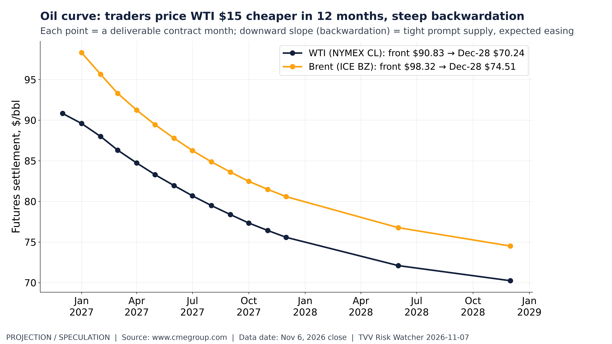
Oil curve: traders price WTI $15 cheaper in 12 months, steep backwardation. NYMEX WTI and ICE Brent futures by delivery month, Nov 6, 2026 settle: WTI Dec-26 $90.83, Dec-27 $75.58, Dec-28 $70.24. Futures curve = market-implied forward prices, not a forecast. Yahoo/CME, Nov 6, 2026 close. [Projection/Speculation; data as of Nov 6, 2026 close] Source: cmegroup.com data page
9. Stock Averages and Nasdaq Major Movers
- ★ Weekly tape (Oct 30 to Nov 6): S&P 500 −2.7% to 7,376.86, its worst week since April 2025; Nasdaq −3.4% (fourth straight weekly loss, in correction after Thursday's 5.5% drop); Dow −0.9%; Russell 2000 −2.1%. Semis (SOX) fell about 12%. VIX up 32% to 25.6 after a record day of S&P put volume Thursday. Friday's bounce: AMD +11%, Nvidia +2.8%. Reuters · BullQuill · TheStreet
- ★ Equal-weight held up far better than the cap-weighted index (RSP −1.0% vs SPY −2.7%; SMH −11.2%; see graph). Polymarket gives about 54% odds the S&P 500 dips to 7,000 by Dec 31 versus 24% that it reaches 8,000 (see graph). Bitcoin ended near $75,700, heading for a fifth weekly loss after an 11-week low. Polymarket · FXStreet
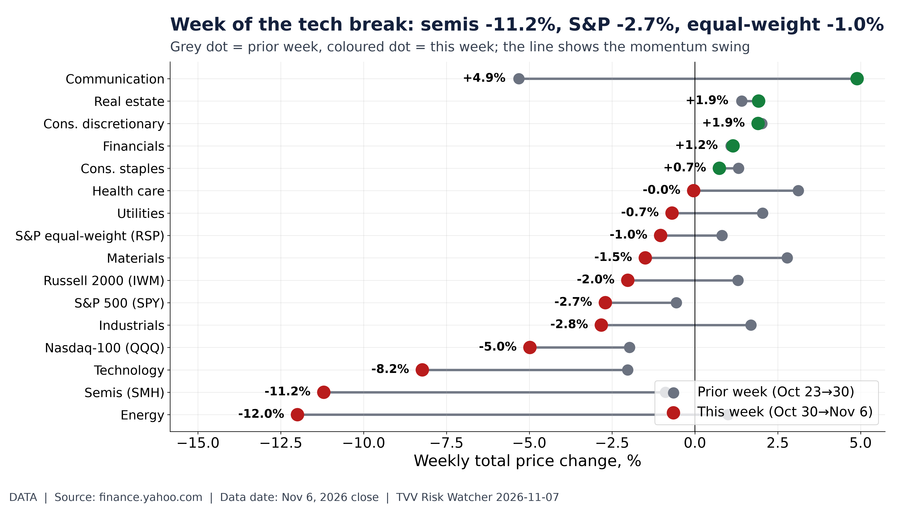
Week of the tech break: semis -11.2%, S&P -2.7%, equal-weight -1.0%. ETF weekly change Oct 30 → Nov 6, 2026 close vs prior week: SMH -11.2% (prior -0.9%), SPY -2.7% (prior -0.6%), RSP -1.0%. Best sector Communication. Yahoo, Nov 6, 2026 close. [Data; data as of Nov 6, 2026 close] Source: finance.yahoo.com data page
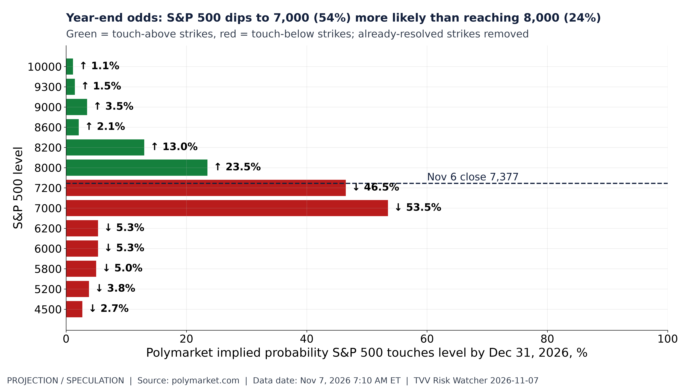
Year-end odds: S&P 500 dips to 7,000 (54%) more likely than reaching 8,000 (24%). Polymarket 'What will S&P 500 hit by end of December' (open strikes): ↓7,000 54%, ↑8,000 24%. S&P 500 closed 7,377 Nov 6 (-5.7% from post-Aug high 7,819). Nov 7, 2026 7:10 AM ET. [Projection/Speculation; data as of Nov 7, 2026 7:10 AM ET] Source: polymarket.com data page
10. Polymarket and Kalshi Sentiment Highlights
- ★ Alaska Senate: Polymarket has Peltola at 98% (from 74% on Oct 8) ahead of the Nov 18 ranked-choice tabulation, but prices about 45% that her final-round margin is under 3 points (see graphs). Near term: the winner looks settled to traders; the size of the margin does not. Polymarket · Polymarket · Alaska Division of Elections
- ★ Diplomacy odds into next week: Hormuz agreement by Dec 31 at about 36% and a Russia–Ukraine ceasefire by Dec 31 at about 10.5% on Polymarket, both nearly flat for a month despite Tuesday's Abu Dhabi talks and Qatar's mediation (see GEO graphs). Polymarket · Polymarket
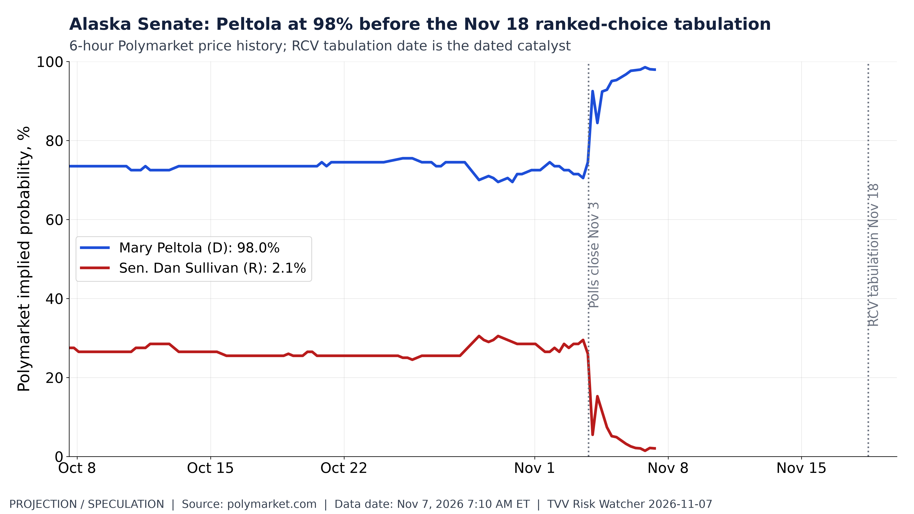
Alaska Senate: Peltola at 98% before the Nov 18 ranked-choice tabulation. Polymarket Alaska Senate Election Winner: Peltola 74% (Oct 8) → 98.0%; Sullivan 2.1%. RCV tabulation Nov 18 (Alaska Division of Elections). Polymarket CLOB, Nov 7, 2026 7:10 AM ET. [Projection/Speculation; data as of Nov 7, 2026 7:10 AM ET] Source: polymarket.com data page
11. Tech-Metrics
- ★ The world's-largest-company race flipped: Polymarket now gives Apple 63% to be the largest company at the end of 2026, Nvidia 34.5% (Nvidia was 87.5% on Oct 8; see graph). Nvidia fell 8.8% on the week while Apple slipped 0.7% (see heatmap). Polymarket · Yahoo Finance
- ★ Executives push back on the midterm selloff: OpenAI CFO Sarah Friar told CNBC OpenAI will keep investing in data centers despite election results favoring construction limits; Arm, Qualcomm and Box executives also responded. Nvidia's guarantee for SB Energy's PORTS-Pike campus in Ohio, planned for up to 8 GW of AI compute from 2028, is the reference deal. CNBC · CNBC · Nvidia
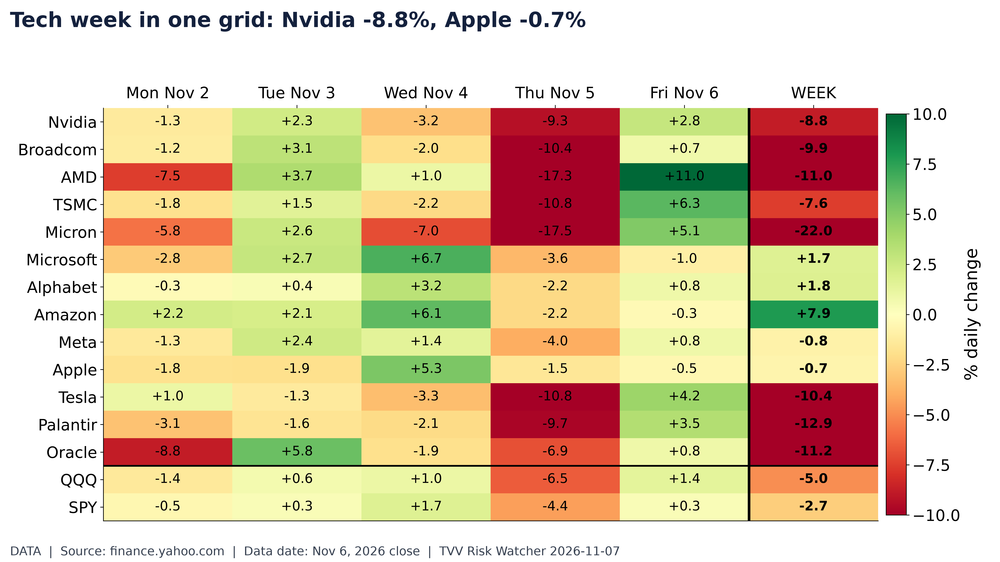
Tech week in one grid: Nvidia -8.8%, Apple -0.7%. Daily % change Mon Nov 2 – Fri Nov 6, 2026 and week (Oct 30 → Nov 6 close): Nvidia -8.8%, QQQ -5.0%, SPY -2.7%; Thu Nov 5 is the selloff column. Yahoo, Nov 6, 2026 close. [Data; data as of Nov 6, 2026 close] Source: finance.yahoo.com data page
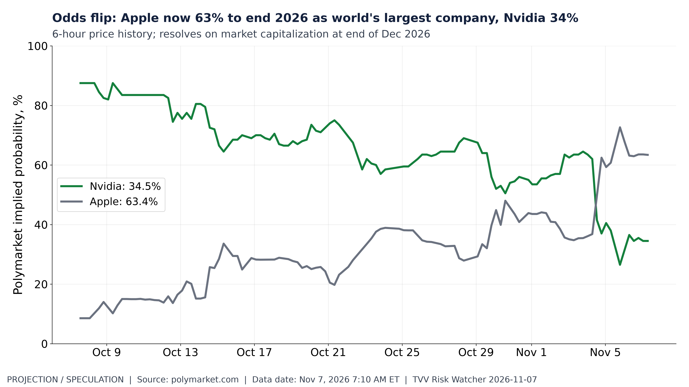
.Odds flip: Apple now 63% to end 2026 as world's largest company, Nvidia 34%. Polymarket 'Largest Company end of December 2026': Nvidia 87.5% (Oct 8) → 34.5%; Apple 8.6% → 63.4%. Market volume ~$9.9M. Polymarket CLOB, Nov 7, 2026 7:10 AM ET. [Projection/Speculation; data as of Nov 7, 2026 7:10 AM ET] Source: polymarket.com data page
12. AI Hypergrowth Risks
- ★ AI-exposed jobs in October: information −1,000 (12-month average −10,300), computer systems design +3,200, temp help +18,600; unemployment for ages 20–24 eased to 9.3% from 9.9% (see graph). The strong headline print does not yet show AI-led job losses beyond the information sector. BLS
- ★ AI concentration risk in prices: Polymarket gives about 34% odds that Nvidia ends 2026 below $4.5 trillion and about 32% that H100 GPU rental prices fall to $2.25 (see graph). Near term: traders are pricing a real chance of cheaper compute and a lower AI leader, after a week when the midterm result hit data-center names hardest. Polymarket
- ★ AI success and fragility the same day: MIT researchers unveiled CheMeleon, which predicts molecular properties from scant data, while outage trackers logged incidents across several AI services on Nov 6, most resolved quickly, a reminder of how many workflows now depend on a few AI providers. MIT News · MUVO AI incidents
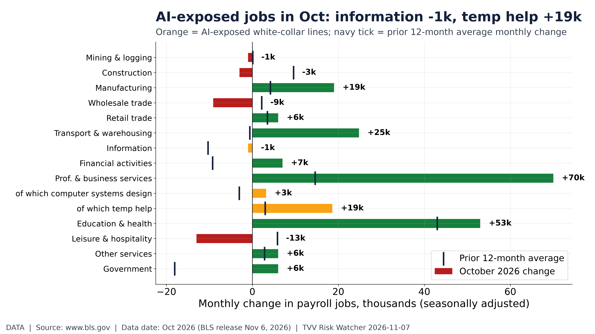
AI-exposed jobs in Oct: information -1k, temp help +19k. BLS CES October 2026 (Nov 6 release): information -1.0k (12-mo avg -10.3k), computer systems design +3.2k, temp help +18.6k; unemployment age 20–24 9.3% (Sep 9.9%). FRED/BLS. [Data; data as of Oct 2026 (BLS release Nov 6, 2026)] Source: bls.gov data page
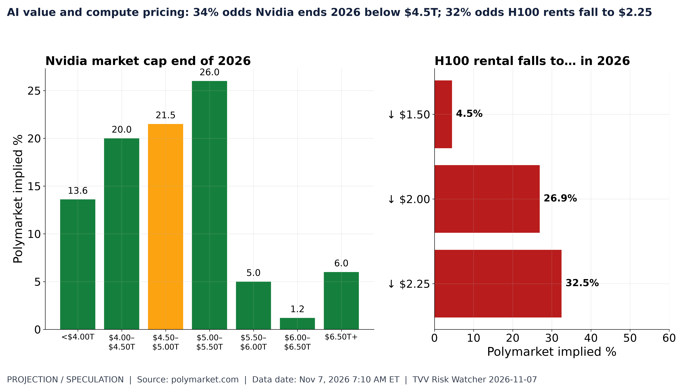
AI value and compute pricing: 34% odds Nvidia ends 2026 below $4.5T; 32% odds H100 rents fall to $2.25. Polymarket 'Nvidia's market cap end of 2026' buckets and 'GPU rental prices (H100) hit ___ in 2026' downside strikes (upside $2.75–$3.50 already hit). Nov 7, 2026 7:10 AM ET. [Projection/Speculation; data as of Nov 7, 2026 7:10 AM ET] Source: polymarket.com data page
TECHVESTVENTURES ACTION-ALERT — November 7, 2026 see all graphs click TVV Risk Center
EDITOR — Michael Hentschel
Most news events require or spawn no action or reaction, some (but not many) are or become warnings. We draw attention to substantial lifestyle risks and market risks in particular, some created by Mid-Term Vote anxieties, Middle East tensions, vast over-indebtedness globally, and other events we track. Longer term but capable of causing sudden power surges as serious as the Carrington Event. Climate instability occasioned by long-term cyclical solar electro-magnetic flares, is becoming much more prominent and even more likely. New AI predictive analytics and pattern seekers are pointed in some of these directions, and we monitor imminent likelihood. Some readers might hedge and others might see opportunity. The above is not investment advice.
Graph Sources
• Iran track: markets give a Hormuz deal only 36% by year-end: https://polymarket.com/event/us-iran-hormuz-agreement-byptptpt-20260803235957575
• Iran track: markets give a Hormuz deal only 36% by year-end (data): https://polymarket.com/event/next-us-iran-senior-diplomatic-meeting-byptptpt
• Iran track: markets give a Hormuz deal only 36% by year-end (data): https://polymarket.com/event/iran-leadership-change-by
• Iran track: markets give a Hormuz deal only 36% by year-end (data): https://polymarket.com/event/will-the-iranian-regime-fall-by-the-end-of-2026
• Diplomacy odds flat: no year-end Iran or Ukraine breakthrough priced: https://polymarket.com/event/russia-x-ukraine-ceasefire-by
• Patch clock: 6 exploited bugs hit federal deadlines by Nov 20: https://www.cisa.gov/known-exploited-vulnerabilities-catalog
• Patch clock: 6 exploited bugs hit federal deadlines by Nov 20 (data): https://www.cisa.gov/sites/default/files/feeds/known_exploited_vulnerabilities.json
• Patch clock: 6 exploited bugs hit federal deadlines by Nov 20 (data): https://www.cisa.gov/news-events/directives/bod-22-01-reducing-significant-risk-known-exploited-vulnerabilities
• Felt vs size: M7.7 Panama quake drew the most felt reports: https://earthquake.usgs.gov/earthquakes/feed/v1.0/summary/4.5_month.geojson
• Felt vs size: M7.7 Panama quake drew the most felt reports (data): https://earthquake.usgs.gov/data/dyfi/
• Felt vs size: M7.7 Panama quake drew the most felt reports (data): https://earthquake.usgs.gov/data/pager/
• Quake markets: 81% odds of no M6.5+ this week; USGS tally so far 3 M5.5+: https://polymarket.com/event/how-many-5pt5-or-above-earthquakes-worldwide-november-2-november-8
• Quake markets: 81% odds of no M6.5+ this week; USGS tally so far 3 M5.5+ (data): https://polymarket.com/event/how-many-6pt5-or-above-earthquakes-worldwide-november-2-november-8
• Quake markets: 81% odds of no M6.5+ this week; USGS tally so far 3 M5.5+ (data): https://earthquake.usgs.gov/earthquakes/feed/v1.0/summary/4.5_week.geojson
• Satellite charging risk: GOES electrons peaked at 4,864 pfu this week: https://www.swpc.noaa.gov/products/goes-electron-flux
• Satellite charging risk: GOES electrons peaked at 4,864 pfu this week (data): https://services.swpc.noaa.gov/json/goes/primary/integral-electrons-7-day.json
• Outlook: G1 storm-level Kp 5 forecast around Nov 17, Nov 18, Nov 27, Nov 28: https://services.swpc.noaa.gov/text/27-day-outlook.txt
• Outlook: G1 storm-level Kp 5 forecast around Nov 17, Nov 18, Nov 27, Nov 28 (data): https://www.swpc.noaa.gov/products/27-day-outlook-107-cm-radio-flux-and-geomagnetic-indices
• Data centers +90% y/y while most US building categories shrink: https://www.census.gov/construction/c30/xlsx/privsatime.xlsx
• Data centers +90% y/y while most US building categories shrink (data): https://www.census.gov/construction/c30/c30index.html
• October jobs: +165k, and Aug–Sep revised up +84k: https://www.bls.gov/news.release/empsit.nr0.htm
• October jobs: +165k, and Aug–Sep revised up +84k (data): https://fred.stlouisfed.org/series/PAYEMS
• October jobs: +165k, and Aug–Sep revised up +84k (data): https://fred.stlouisfed.org/series/UNRATE
• Treasuries: 10-year -7 bp on the week, +2 bp on jobs day: https://finance.yahoo.com/quote/%5ETNX/
• Treasuries: 10-year -7 bp on the week, +2 bp on jobs day (data): https://finance.yahoo.com/quote/%5EIRX/
• Treasuries: 10-year -7 bp on the week, +2 bp on jobs day (data): https://finance.yahoo.com/quote/%5EFVX/
• Treasuries: 10-year -7 bp on the week, +2 bp on jobs day (data): https://finance.yahoo.com/quote/%5ETYX/
• Treasuries: 10-year -7 bp on the week, +2 bp on jobs day (data): https://fred.stlouisfed.org/series/DGS10
• Markets now price 'overheating' (81%) over a soft landing (19%) for year-end: https://polymarket.com/event/us-economic-state-at-the-end-of-2026
• Markets now price 'overheating' (81%) over a soft landing (19%) for year-end (data): https://www.bls.gov/cpi/
• Flu is early: lab positivity 9.1% at end-October, 5–9x the last three seasons: https://data.cdc.gov/Laboratory-Surveillance/Percent-of-Tests-Positive-for-Viral-Respiratory-Pa/seuz-s2cv
• Flu is early: lab positivity 9.1% at end-October, 5–9x the last three seasons (data): https://www.cdc.gov/respiratory-viruses/data/index.html
• Flu is early: lab positivity 9.1% at end-October, 5–9x the last three seasons (data): https://www.cdc.gov/fluview/index.html
• Commodities week: gold +4.5%, silver +5.5%, WTI -12.8% into Friday: https://finance.yahoo.com/quote/GC%3DF/
• Commodities week: gold +4.5%, silver +5.5%, WTI -12.8% into Friday (data): https://finance.yahoo.com/quote/SI%3DF/
• Commodities week: gold +4.5%, silver +5.5%, WTI -12.8% into Friday (data): https://finance.yahoo.com/quote/CL%3DF/
• Commodities week: gold +4.5%, silver +5.5%, WTI -12.8% into Friday (data): https://finance.yahoo.com/quote/HG%3DF/
• Commodities week: gold +4.5%, silver +5.5%, WTI -12.8% into Friday (data): https://www.cmegroup.com/markets/metals.html
• Oil curve: traders price WTI $15 cheaper in 12 months, steep backwardation: https://www.cmegroup.com/markets/energy/crude-oil/light-sweet-crude.quotes.html
• Oil curve: traders price WTI $15 cheaper in 12 months, steep backwardation (data): https://finance.yahoo.com/quote/CLF27.NYM/
• Oil curve: traders price WTI $15 cheaper in 12 months, steep backwardation (data): https://finance.yahoo.com/quote/BZF27.NYM/
• Week of the tech break: semis -11.2%, S&P -2.7%, equal-weight -1.0%: https://finance.yahoo.com/quote/SPY/
• Week of the tech break: semis -11.2%, S&P -2.7%, equal-weight -1.0% (data): https://finance.yahoo.com/quote/SMH/